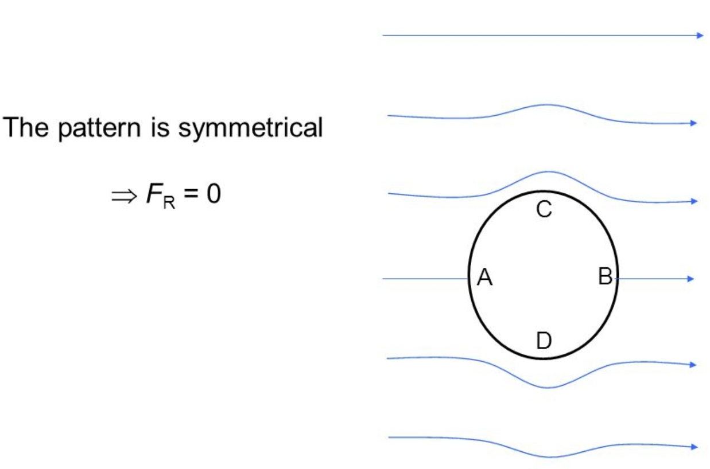
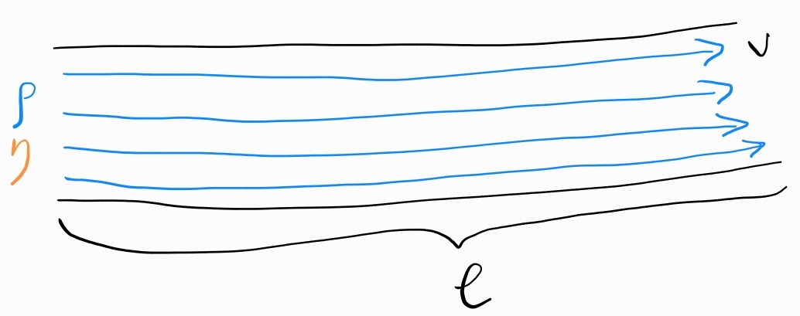

-
Парадокс на д’Алямбер - на тяло, движещо се в идеален флуид, не действа съпротивление

-
Движение във вискозен флуид
а) число на Рейнолдс ($R_e, []$) - безразмерен коефициент, даващ оценка дали движението на флуида е ламинарно или турбулентно
$$R_e \overset{\text{def}}{=} \frac{\rho v l}{\eta}$$

- ламинарно течение: $R_e \ll 1$
- турбулентно течение: $R_e \gg 1$
б) движение в ламинарно течение
- закон на Стокс - флуидът оказва следната сила на съпротивление върху сферично тяло с радиус $r$, движещо се със скорост $v$
$$F = 6\pi \eta r v$$
в) движение в турбулентно течение - флуидът оказва сила на челно съпротивление върху тялото, която зависи от неговата форма, скоростта, с която то се движи, повърхността на напречното му сечение и плътността на флуида
$$F = \frac{1}{2}C_x\rho Sv^2$$
г) подемна сила - силата, която не знам
-
Плавателност
а) закон на Архимед - флуидът упражнява сила нагоре върху всяко тяло, потопено в него, която е равна на тежестта на изместения от тялото флуид
б) плаване
- $\rho_{\text{object}} \lt \rho_{\text{fluid}}$ - тялото плава на повърхността на флуида и е само частично потопено
- $\rho_{\text{object}} = \rho_{\text{fluid}}$ - тялото плава точно под повърхността на флуида и е напълно потопено в него
- $\rho_{\text{object}} \gt \rho_{\text{fluid}}$ - тялото потъва на дъното